Cryptography
Introduction · History · Examples · Researchers
Introduction
The word “cryptography” comes from Greek kryptós (hidden) and gráphein (writing). It is the study of the mathematical techniques used to secure communication, which involves using “hidden writing” to keep information secret. So that you get the idea, here is a simple example: we come up with a secret code between two individuals, which nobody else knows about. This secret code is the ‘key’. Then the sender encrypts the message using this key and sends it to the other. The receiver will use this key to decrypt what they were sent in order to retrieve the original message. As the receiver is the only one who has the key, only they will be able to decrypt it to see the actual message.
History
Early Cryptography
About four thousand years ago, a number of unusual symbols were written on the tomb of nobleman Khnumhotep II. It is known as the oldest modification of text ever to be found. This principle is one of cryptography’s components.
In 1900BC, the first known use of cryptography appeared in Egypt. It was found carved into the wall of a tomb from the Old Kingdom of Egypt circa.
In 5th century BC, a city-state called Sparta sent and received secret messages using a cylinder-shaped cryptographic device. The device, called a Scytale, was only owned by the sender and the recipient of the message. The message was written across a narrow strip and wound around the cylinder. Solely a scytale of the exact same size was used to rewind it so that only the receiver could get the information written.
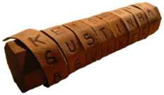A Scytale
From 60-50BC, Julius Caesar developed a method, called the Caesar cipher, to encrypt messages by shifting every letter of the alphabet by three. Caesar was the first recorded person to use this kind of method. However, it is believed other substitution ciphers had been used before.
In 1466, an essay written by Italian cryptographer Leon Battista Alberti described how he developed the cipher disk and how he founded the idea of polyalphabetic ciphers. Nevertheless, he did not develop this concept and instead, left it to others. A French cryptographer Blaise de Vigenere developed the Vigenère Square based on a practical polyalphabetic system. At the time, it was believed the Vigenère Square was unbreakable. Read more about this on the cryptanalysis section.
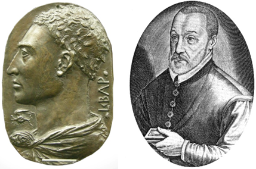Leon Battista Alberti (left) and Blaise de Vigenère (right)
Modern Cryptography
In 1836, an electrical telegraph system was developed. Around 1837, Morse developed a forerunner of the modern International Morse code which can be used to transmit messages using in the telegraph system. The Morse code uses different series of dots and dashes to represent different letters. The Morse code was used widely in WWI and WWII, especially between the warships and the naval bases.

Morse code receiver, recording on paper tape and International Morse Code
In the 1840s Edgar Allan Poe solved many ciphers using systematic methods. Alexander's Weekly Messenger, a newspaper from Philadelphia, noticed his abilities and successfully created a public stir.
Probably until 1854, Charles Babbage worked on finding a way to decrypt encrypted messages by developing a method based on statistics using the Vigenère square. However, given that he did not publish his result, this advance was not discovered until the 20th century.
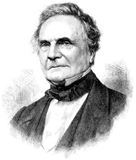Blaise de Vigenère
Later in 1863, German cryptographer Friedrich Wilhelm Kasiski published a book on cryptography and attempted to break polyaphabetic ciphers. He did this by using a method consisting on the analysis of gaps in the encrypted messages.
In World War I, a cipher called the ADFGVX cipher was used in by the German army. This cipher only uses A, D, F, G, V and X to encrypt messages, and was named by those six letters. Those six letters were chosen because of their differences in the Morse code. Go here to give it a go at this cipher.
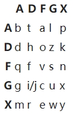ADFGVX encryption table
In the 1920s, an encryption machine called Enigma was developed by German engineer Arthur Scherbius. This was widely used by German armed forces in WWII. It uses a set of rotors to do a random encryption. It was thought to be unbreakable. However, due to its cryptographic weaknesses and operator mistakes, Allied cryptologists managed to break it successfully. It is believed that the decryption of Enigma was crucial for the victory of the Allies.
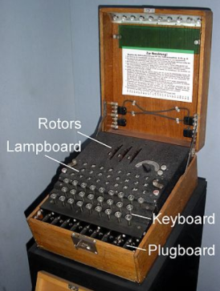Military Enigma machine
World War II - Mind of a Code Breaker
In 1949, Claude Shannon published a paper called "Communication Theory of Secrecy Systems". It was about his work on the mathematical theory of cryptography during wartime. And he proved that all theoretically unbreakable ciphers must have the same requirements as the one-time pad.
Claude Shannon
Nowadays, public-key cryptography is widely used in many websites and organizations. This system uses pairs of keys named public keys (which can be shared widely) and private keys (which are only held by owners). Holders of public keys can encrypt their messages using these keys. However, only the holder of the private key can decrypt them. In a public-key signature system, a message and a private key can be combined to create a short digital signature on the message. Public keys holders can verify whether the signature was made by the owner of the private key to check whether the message has been changed by someone else.
Examples
- Substitution Ciphers: This method consists of replacing the letters of the original message to a different form. The Caesar cipher is a typical substitution cipher. It shifts the letters of the alphabet in the original message by a fixed number of places. If you want to try a Caesar cipher encryption, click here.
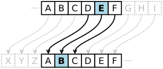
Still, in each language, several letters have larger frequency than others. Therefore an analysis of frequency can easily break this kind of cipher. You can learn more about frequency analysis from Cryptanalysis.
- The Vigenère Square: This is a method of encrypting text in a polyalphabetic approach. It was developed by Blaise de Vigenère in the 19th century, and it has since then been reinvented several times.
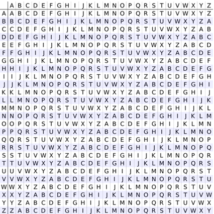The Vigenère Square
To understand how it works, here is an example of encryption using the Vigenère Square.
Suppose we want to encrypt “HELLOWORLDHELLOWORLD”.
Now chose a word to be the key, for example “SECURITY”. Repeat it until the length matches the length of the massage to be encrypted. In this case: ”SECURITYSECURITYSECU”.
[ Row = Key, Column = Message. Match each letter. For instance, the first letter of the message is H, we find column S and check H = Z. ]
Plaintext: HELLOWORLDHELLOWORLD
Key: SECURITYSECURITYSECU
Cipher text: INFFEHPDHJYCTHUGVNX
Click here to encrypt your own message.
- The Enigma: These were electro-mechanical machines used in WWII by the German forces to encrypt their messages and make sure their communication was not read by anyone else.
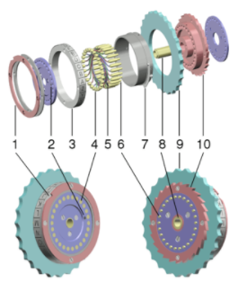A Rotor of Enigma
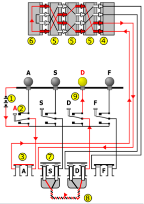Example of Enigma wiring diagram
The input is A in this diagram and the output is D. While pressing the letter A, three rotors change randomly and change the way of reflection. The next letter “A” probably changes the way of encryption.
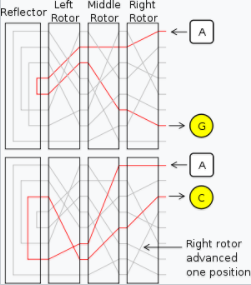
Therefore there are many possible settings of of Enigma wiring, hence its difficulty of cryptanalysis.
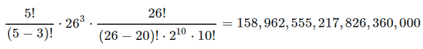Calculation of Possible Settings
Learn more about cryptanalysis of Enigma from “the Bombe” on the cryptanalysis section.
- Public Key Cryptography: this is any system that focuses on encrypting a message using a pair of keys. One of the keys is public and can be shared. The other key is private and is only held by the receiver.
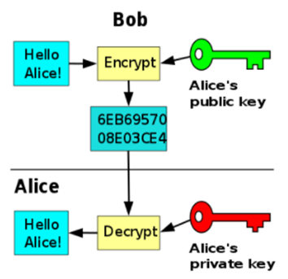Explanation of Public-key Cryptography
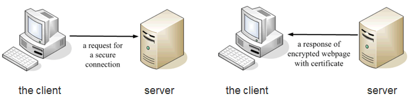How it works
RSA is a widely used public key algorithm which provides digital signatures, key distribution and secrecy. Here is a video about RSA.
RSA algorithm